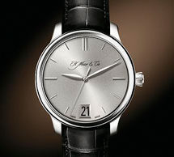
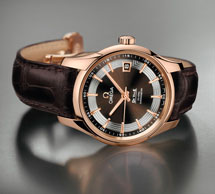

Статья
Наручные женские часы не только необходимость знания времени, но и элемент имиджа, предмет гордости, и украшение! Для женщин стало престижно иметь не одни часы, а несколько. Они ведь, несомненно, должны сочетаться с Вашим нарядом. Сплошная элегантность и роскошь, браслет и корпус инкрустированы стразами, застежка простая.
Они ведь, несомненно, должны сочетаться с Вашим нарядом. Сплошная элегантность и роскошь, браслет и корпус инкрустированы стразами, застежка проста, удобна в применении.
Заголовок Н3
Наручные женские часы не только необходимость знания времени, но и элемент имиджа, предмет гордости, и украшение! Для женщин стало престижно иметь не одни часы, а несколько. Они ведь, несомненно, должны сочетаться с Вашим нарядом. Сплошная элегантность и роскошь, браслет и корпус инкрустированы стразами, застежка простая.
Заголовок Н4
- 
- 
Часы должны сочетаться с Вашим нарядом. Сплошная элегантность и роскошь, браслет и корпус инкрустированы стразами, застежка простая:
- Модные женские часы в 2013 году;
- Самый модный цвет 2013 года;
- Часы женские с керамикой;
Наручные женские часы не только необходимость знания времени, но и элемент имиджа, предмет гордости, и украшение! Для женщин стало престижно иметь не одни часы, а несколько.
| Время | Тестовое название | Название 1 | Название 2 | |
|---|---|---|---|---|
| Тестовое название 1 | колличество 1 | стоимость 1 | тестовая ссылка | |
| Тестовое название 2 | колличество 2 | стоимость 2 | тестовая ссылка | |
| Тестовое название 3 | колличество 3 | стоимость 3 | тестовая ссылка |
ТАБЫ
Тестовый текст в первом табе. Наручные женские часы не только необходимость знания времени, но и элемент имиджа, предмет гордости, и украшение! Для женщин стало престижно иметь не одни часы, а несколько. Они ведь, несомненно, должны сочетаться с Вашим нарядом. Сплошная элегантность и роскошь, браслет, корпус инкрустированы стразами, застежка простая.
Тестовый текст в втором табе. Наручные женские часы не только необходимость знания времени, но и элемент имиджа, предмет гордости, и украшение! Для женщин стало престижно иметь не одни часы, а несколько. Они ведь, несомненно, должны сочетаться с Вашим нарядом. Сплошная элегантность и роскошь, браслет, корпус инкрустированы стразами, застежка простая.
Тестовый текст в третем табе. Наручные женские часы не только необходимость знания времени, но и элемент имиджа, предмет гордости, и украшение! Для женщин стало престижно иметь не одни часы, а несколько. Они ведь, несомненно, должны сочетаться с Вашим нарядом. Сплошная элегантность и роскошь, браслет, корпус инкрустированы стразами, застежка простая.
Тестовый текст в четвертом табе. Наручные женские часы не только необходимость знания времени, но и элемент имиджа, предмет гордости, и украшение! Для женщин стало престижно иметь не одни часы, а несколько. Они ведь, несомненно, должны сочетаться с Вашим нарядом. Сплошная элегантность и роскошь, браслет, корпус инкрустированы стразами, застежка простая.